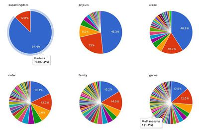

BH12.12/SPARQLthon2/MDBuse
提供：TogoWiki
（版間での差分）
(→SPARQL) |
|||
| 175行： | 175行： | ||
==== SPARQL ==== | ==== SPARQL ==== | ||
| - | * | + | *ルールセットを設定せずに、再帰検索する方法(virtuoso) |
| + | ※subclassは階層的に検索されるが、本人(MEO_0000036)は出力されない | ||
PREFIX rdfs:<http://www.w3.org/2000/01/rdf-schema#> | PREFIX rdfs:<http://www.w3.org/2000/01/rdf-schema#> | ||
| 185行： | 186行： | ||
{ | { | ||
{ | { | ||
| - | SELECT ?x ?y WHERE { ?x rdfs:subClassOf ?y option(transitive) | + | SELECT ?x ?y WHERE { ?x rdfs:subClassOf ?y option(transitive) |
| + | FILTER ( ?y = meo:MEO_0000036 ) } | ||
} | } | ||
| - | |||
} | } | ||
| - | |||
==== Environment関連 ==== | ==== Environment関連 ==== | ||
2012年12月4日 (火) 08:44時点における最新版
目次 |
使用データ
- メインデータ
- graph <http://localhost:8890/DAV/refseqv2>
- refseq2rdfv2
- graph <http://localhost:8890/DAV/refseqv2>
- IDリンク関連
- graph <http://localhost:8890/DAV/sample>
- 20121031-miriam.ttl //seeAlsoのリンク先DBリスト
- gold2ontology2.ttl.txt //goldのprefixにwwwを追記
- meo_sample.ttl.Changed
- prokaryotes.txt.bioproject_refseq.nt
- summary.txt.bioproject_taxid_gold.nt
- graph <http://localhost:8890/DAV/sample>
- owlファイル
- graph <http://localhost:8890/DAV/sample_owl>
- meo20121031.owl //森さんから頂いたもの。subproperty=typeを追記
- graph <http://localhost:8890/DAV/sample_owl>
- graph <http://localhost:8890/DAV/ncbi_taxonomy_owl>
- MEOのサイトからダウンロード
- graph <http://localhost:8890/DAV/ncbi_taxonomy_owl>
- オントロジー用ルールセットの追加
rdfs_rule_set ('http://localhost:8890/DAV/sample_owl', 'http://localhost:8890/DAV/20121031owl');
rdfs_rule_set ('http://localhost:8890/DAV/sample_owl', 'http://localhost:8890/DAV/ncbi_taxonomy_owl');
- Strain関連
- graph <http://localhost:8890/DAV/sample_nbrc>
- tax2nbrc_okb.nt //川島さんから頂いたもの。PrefixがJCMのものになっていたので置換
- graph <http://localhost:8890/DAV/sample_nbrc>
- graph <http://localhost:8890/DAV/sample_jcm>
- tax2jcm_okb.nt //川島さんから頂いたもの。taxonomyのPrefixをRefseqに合うように置換
- graph <http://localhost:8890/DAV/sample_jcm>
前)http://www.ncbi.nlm.nih.gov/Taxonomy/Browser/wwwtax.cgi?mode=Info&id= 後)http://www.ncbi.nlm.nih.gov/taxonomy/
- ID繋ぎ込み用の追加トリプル(後述)
- graph <http://localhost:8890/DAV/sample_bridge>
- seeAlso_bridge.ttl //seeAlsoのタイプを判定するためのトリプル
- graph <http://localhost:8890/DAV/taxonomy_id>
- taxonIdMap.ttl //taxonomyIDをNCBIowlファイルと繋げるトリプル
- graph <http://localhost:8890/DAV/sample_bridge>
- フリーテキストインデックス(トリプル件数が多いものだけにインデックス追加)
DB.DBA.RDF_OBJ_FT_RULE_ADD('http://localhost:8890/DAV/refseqv2', null, 'All');
DB.DBA.RDF_OBJ_FT_RULE_ADD('http://localhost:8890/DAV/ncbi_taxonomy_owl', null, 'All');
IDの繋ぎ込み
DBタイプ情報の追加
各データのIDを指すpredicateがrdfs:seeAlsoになっているため、何のDBへのリンクなのか区別がつかない。 chromosome単位のseeAlsoのリストを取得。
PREFIX obo:<http://purl.obolibrary.org/obo/> SELECT ?organism ?link FROM <http://localhost:8890/DAV/refseqv2> WHERE { ?organism a obo:SO_0000340 ; rdfs:seeAlso ?link }
linkのテキストからDBタイプを決定。20121031-miriam.ttlに無いDB名は適当に付与。
@prefix rdf: <http://www.w3.org/1999/02/22-rdf-syntax-ns#> . @prefix ds: <http://identifiers.org/dataset/> . <http://www.ncbi.nlm.nih.gov/nuccore/386836097> rdf:type ds:Nuccore2 . <http://www.ncbi.nlm.nih.gov/bioproject/89409> rdf:type ds:Bioproject . <http://www.ncbi.nlm.nih.gov/nuccore/NC_017765.1> rdf:type ds:Nuccore1 . <http://www.ncbi.nlm.nih.gov/taxonomy/1133850> rdf:type ds:Taxonomy . <http://www.ncbi.nlm.nih.gov/pubmed/16436211> rdf:type ds:Pubmed .
Taxonomyのタイプ追加
NCBIのTaxonomyのowlファイルと繋げるために、refseq2rdf内のTaxonomyリンクデータのtypeを追加
<http://www.ncbi.nlm.nih.gov/taxonomy/1133850> rdf:type <http://purl.org/obo/owl/NCBITaxon#NCBITaxon_1133850> . <http://www.ncbi.nlm.nih.gov/taxonomy/272561> rdf:type <http://purl.org/obo/owl/NCBITaxon#NCBITaxon_272561> .
- オントロジーの確認
あるTaxonomyのルートまでの階層を表示
DEFINE input:inference <http://localhost:8890/DAV/ncbi_taxonomy_owl> SELECT ?type ?label ?rank FROM <http://localhost:8890/DAV/refseqv2> FROM <http://localhost:8890/DAV/taxonomy_id> FROM <http://localhost:8890/DAV/ncbi_taxonomy_owl> WHERE { <http://www.ncbi.nlm.nih.gov/taxonomy/666681> a ?type. ?type rdfs:label ?label. OPTIONAL {?type <has_rank> ?rank.} }
結果
type label rank http://purl.org/obo/owl/NCBITaxon#NCBITaxon_666681 "Methylotenera versatilis 301"@en http://purl.org/obo/owl/NCBITaxon#NCBITaxon_1055487 "Methylotenera versatilis"@en http://purl.org/obo/owl/NCBITaxon#species http://purl.org/obo/owl/NCBITaxon#NCBITaxon_359407 "Methylotenera"@en http://purl.org/obo/owl/NCBITaxon#genus http://purl.org/obo/owl/NCBITaxon#NCBITaxon_32011 "Methylophilaceae"@en http://purl.org/obo/owl/NCBITaxon#family http://purl.org/obo/owl/NCBITaxon#NCBITaxon_206350 "Methylophilales"@en http://purl.org/obo/owl/NCBITaxon#order http://purl.org/obo/owl/NCBITaxon#NCBITaxon_28216 "Betaproteobacteria"@en http://purl.org/obo/owl/NCBITaxon#class http://purl.org/obo/owl/NCBITaxon#NCBITaxon_1224 "Proteobacteria"@en http://purl.org/obo/owl/NCBITaxon#phylum http://purl.org/obo/owl/NCBITaxon#NCBITaxon_2 "Bacteria"@en http://purl.org/obo/owl/NCBITaxon#superkingdom http://purl.org/obo/owl/NCBITaxon#NCBITaxon_131567 "cellular organisms"@en http://purl.org/obo/owl/NCBITaxon#NCBITaxon_1 "root"@en
SPARQL例
使いそうなSPARQL文を色々と試した。
Taxonomy関連
- refseqにフリーテキスト検索をかけて、TaxonomyIDを取得
PREFIX obo:<http://purl.obolibrary.org/obo/> PREFIX ds:<http://identifiers.org/dataset/> PREFIX genome:<http://genome.db/sw/> SELECT ?organism ?taxonomy FROM <http://localhost:8890/DAV/refseqv2> FROM <http://localhost:8890/DAV/sample_bridge> WHERE { { SELECT distinct(?organism) WHERE { ?organism rdf:type obo:SO_0000340; ?p ?text FILTER ((str(?p) = str(rdfs:label)) || (str(?p) = str(rdfs:comment)) || (str(?p) = str(genome:version)) || (str(?p) = str(genome:organism))). ?text bif:contains '"MG1655"'. } } ?organism rdfs:seeAlso ?taxonomy. ?taxonomy a ds:Taxonomy }
Gene関連
- refseqに遺伝子名でのフリーテキスト検索をかけて、ヒットするタイプ毎の件数を取得
SELECT ?type count(?type) as ?rownum FROM<http://localhost:8890/DAV/refseqv2> WHERE { ?s ?p ?text. ?text bif:contains '"rpoB"'. ?s rdf:type ?type } GROUP BY ?type
結果
http://purl.obolibrary.org/obo/SO_0000704 1323件 gene http://purl.obolibrary.org/obo/SO_0000141 1件 terminator http://purl.obolibrary.org/obo/SO_0000139 9件 ribosome_entry_site http://purl.obolibrary.org/obo/SO_0000316 1370件 CDS http://purl.obolibrary.org/obo/SO_0000141 1件 terminator http://purl.obolibrary.org/obo/SO_0000001 200件 region
- ある遺伝子が含まれるgenomeのsuperkingdom毎の件数を取得
DEFINE input:inference <http://localhost:8890/DAV/ncbi_taxonomy_owl> PREFIX obo:<http://purl.obolibrary.org/obo/> PREFIX dcterms:<http://purl.org/dc/terms/> PREFIX ds:<http://identifiers.org/dataset/> PREFIX taxon:<http://purl.org/obo/owl/NCBITaxon> SELECT ?taxlabel count(*) as ?count FROM <http://localhost:8890/DAV/refseqv2> FROM <http://localhost:8890/DAV/sample_bridge> FROM <http://localhost:8890/DAV/taxonomy_id> FROM<http://localhost:8890/DAV/ncbi_taxonomy_owl> WHERE { ?gene rdf:type obo:SO_0000704; dcterms:isPartOf ?genomeid; ?p ?text. ?text bif:contains '"rpoB"'. ?genomeid rdfs:label ?label; rdfs:seeAlso ?taxonid. ?taxonid a ds:Taxonomy; a ?type. ?type rdfs:label ?taxlabel; <has_rank> <http://purl.org/obo/owl/NCBITaxon#superkingdom>. }GROUP BY ?taxlabel
結果
taxlabel count "Bacteria"@en 1238 "Archaea"@en 14
SPARQL
- ルールセットを設定せずに、再帰検索する方法(virtuoso)
※subclassは階層的に検索されるが、本人(MEO_0000036)は出力されない
PREFIX rdfs:<http://www.w3.org/2000/01/rdf-schema#> PREFIX meo:<http://purl.jp/bio/11/meo/> SELECT DISTINCT ?x FROM <http://localhost:8890/DAV/sample_owl> WHERE { { SELECT ?x ?y WHERE { ?x rdfs:subClassOf ?y option(transitive) FILTER ( ?y = meo:MEO_0000036 ) } } }
Environment関連
- refseqにフリーテキスト検索をかけて、環境情報を取得
PPREFIX obo:<http://purl.obolibrary.org/obo/> REFIX ds:<http://identifiers.org/dataset/> PREFIX genome:<http://genome.db/sw/> PREFIX meo:<http://purl.jp/bio/11/meo/> SELECT ?env FROM <http://localhost:8890/DAV/refseqv2> FROM <http://localhost:8890/DAV/sample> FROM <http://localhost:8890/DAV/sample_bridge> WHERE { { SELECT distinct(?bioproject) as ?projectid WHERE { ?organism rdf:type obo:SO_0000340; rdfs:seeAlso ?bioproject; ?p ?text FILTER ((str(?p) = str(rdfs:label)) || (str(?p) = str(rdfs:comment)) || (str(?p) = str(genome:version)) || (str(?p) = str(genome:organism))). ?text bif:contains '"MG1655"'. ?bioproject a ds:Bioproject. } } ?projectid rdfs:seeAlso ?orgbioprjctid. ?orgbioprjctid rdfs:label "Genome sequencing"; rdfs:seeAlso ?gold. ?gold meo:environmentalDescribed ?env. }
結果
envo http://purl.org/obo/owl/NCBITaxon#NCBITaxon_9606 http://sig.uw.edu/fma#/Intestine
- "soil"(MEO_0000007)のSRSリストをオントロジーで取得
DEFINE input:inference <http://localhost:8890/DAV/sample_owl> PREFIX srs: <http://trace.ncbi.nlm.nih.gov/Traces/sra/sra.cgi?sample=> PREFIX meo: <http://purl.jp/bio/11/meo/> PREFIX dc: <http://purl.org/dc/elements/1.1/> SELECT ?srs FROM <http://localhost:8890/DAV/sample> WHERE { ?srs ?p ?blank . FILTER ((str(?p) = str(meo:biome)) || (str(?p) = str(meo:environmentalFeature)) || (str(?p) = str(meo:environmentalMaterial)) ). ?blank a meo:MEO_0000007 . }
- "hydrosphere"(MEO_0000004)のGOLDリストをオントロジーで取得
DEFINE input:inference <http://localhost:8890/DAV/sample_owl> PREFIX rdfs: <http://www.w3.org/2000/01/rdf-schema#> PREFIX meo: <http://purl.jp/bio/11/meo/> SELECT distinct(?gold) as ?goldid FROM <http://localhost:8890/DAV/sample> WHERE { ?gold a meo:MEO_0000004; meo:environmentalDescribed ?meo }
- "hydrosphere"(MEO_0000004)のTaxonomyID一覧を取得
DEFINE input:inference <http://localhost:8890/DAV/sample_owl> PREFIX rdfs: <http://www.w3.org/2000/01/rdf-schema#> PREFIX meo: <http://purl.jp/bio/11/meo/> PREFIX ds: <http://identifiers.org/dataset/> SELECT ?taxsonomy FROM <http://localhost:8890/DAV/sample> FROM <http://localhost:8890/DAV/sample_bridge> WHERE { { SELECT distinct(?goldid) as ?gold WHERE { ?goldid a meo:MEO_0000004; meo:environmentalDescribed ?meo. } } ?oriProjectId rdfs:seeAlso ?gold. ?refseqProjectId rdfs:seeAlso ?oriProjectId; rdfs:seeAlso ?taxsonomy; rdfs:label ?dataType FILTER regex(?dataType, "RefSeq Genome", "i" ). ?taxsonomy rdf:type ds:Taxonomy. }
- ある環境中(MEO_00000033=marine habitat)に含まれるsuperkingdom毎の件数を取得
DEFINE sql:select-option "order" DEFINE input:inference <http://localhost:8890/DAV/sample_owl> PREFIX meo: <http://purl.jp/bio/11/meo/> PREFIX ds: <http://identifiers.org/dataset/> SELECT ?taxlabel count(?type) as ?count FROM <http://localhost:8890/DAV/sample> FROM <http://localhost:8890/DAV/sample_bridge> FROM <http://localhost:8890/DAV/refseqv2> FROM <http://localhost:8890/DAV/taxonomy_id> FROM <http://localhost:8890/DAV/ncbi_taxonomy_owl> WHERE { { SELECT distinct(?goldid) as ?gold FROM <http://localhost:8890/DAV/id> WHERE { ?goldid a meo:MEO_0000033 . } } ?oriProjectId rdfs:seeAlso ?gold. ?refseqProjectId rdfs:seeAlso ?oriProjectId; rdfs:seeAlso ?taxsonomy; rdfs:label ?dataType FILTER regex(?dataType, "RefSeq Genome", "i" ). ?taxsonomy rdf:type ds:Taxonomy; a ?type. ?type rdfs:label ?taxlabel; <has_rank> <http://purl.org/obo/owl/NCBITaxon#superkingdom>. } GROUP BY ?taxlabel ORDER BY DESC 2
結果
taxlabel count "Bacteria"@en 76 "Archaea"@en 11
各rankを問い合わせてGoogleChartで可視化した結果
  生物種の割合を示すチャート
生物種の割合を示すチャート
{kind=link}